Cat Clicker · temporary artwork
17 PNG assets for a 1200 × 800 game. Click a gallery image to view its full canvas. Replacement guide · Asset manifest
Gameplay composition
A layout preview with sample UI text. Move your pointer over the scene to try the mouse cursor.
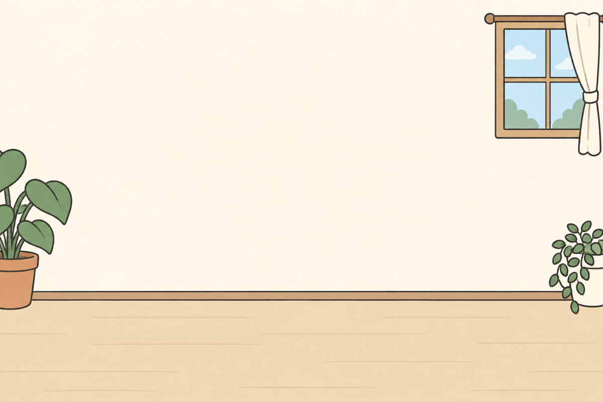
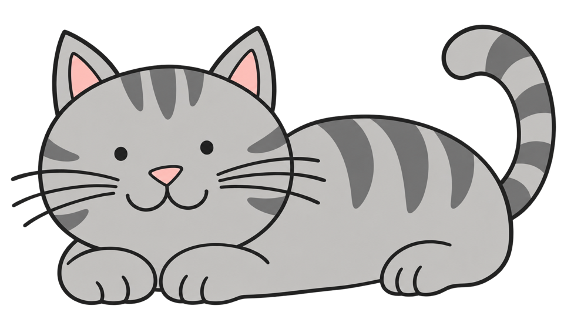
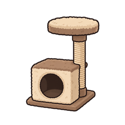
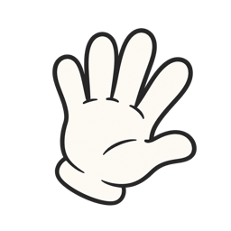
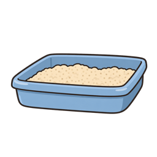
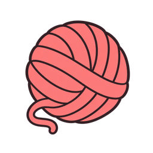
Time: 4:00Points: 0
10 pointsCat Petter
30 pointsLitter Box
80 pointsYarn Ball
1000 pointsCat House
5500 points
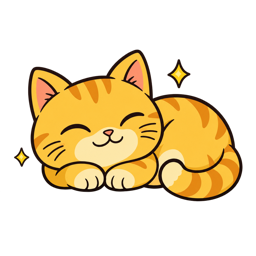
Golden KittyTransparent sprites
Checkerboard tiles show transparency. The cursor below is displayed at its actual 48 × 48 size.


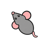
Opening cutscenes

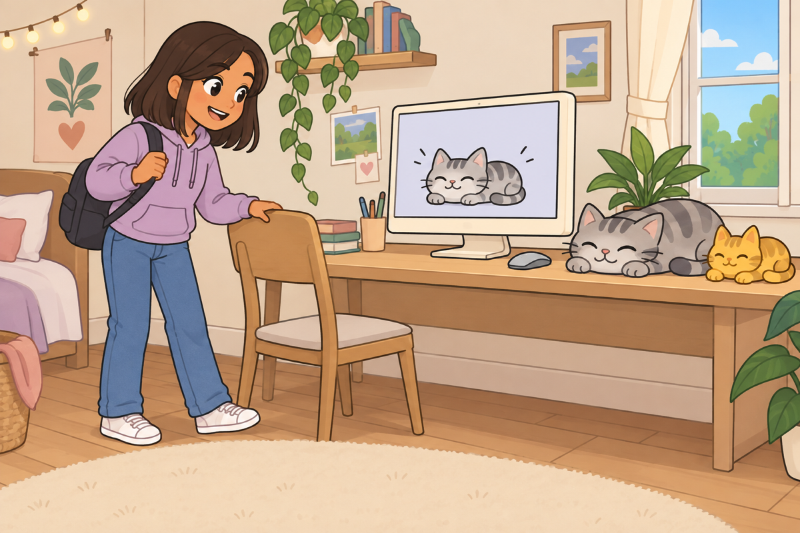

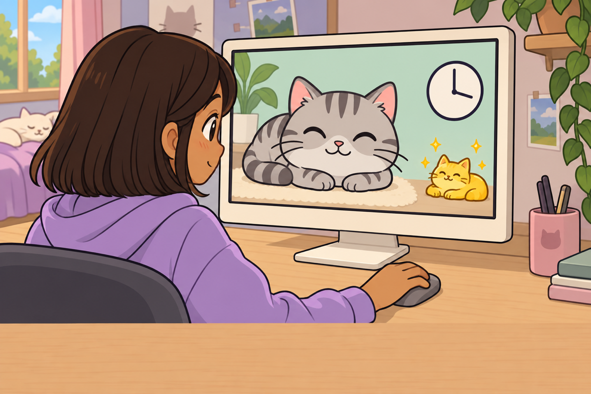

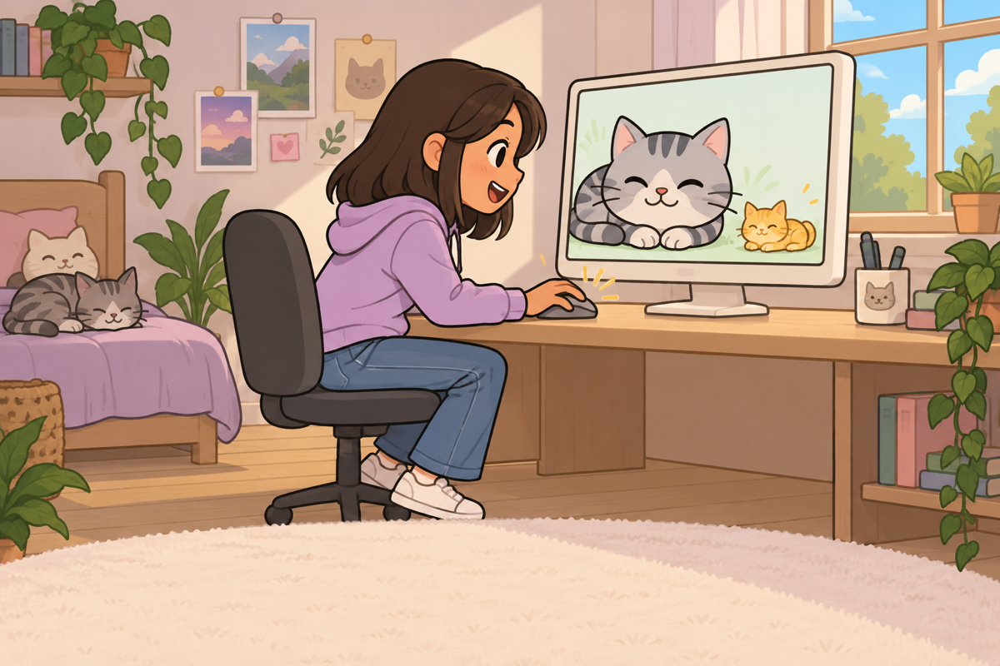
Win cutscenes

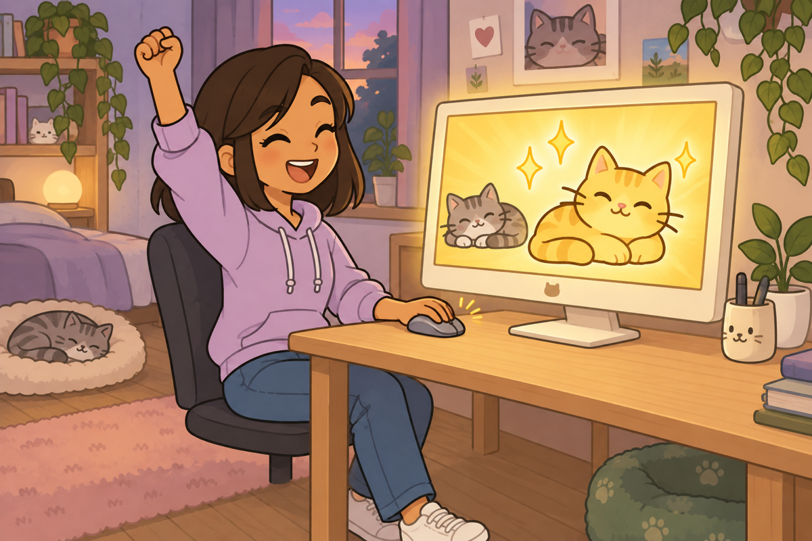

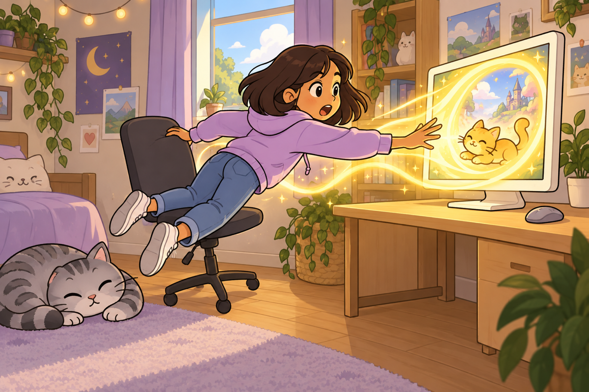

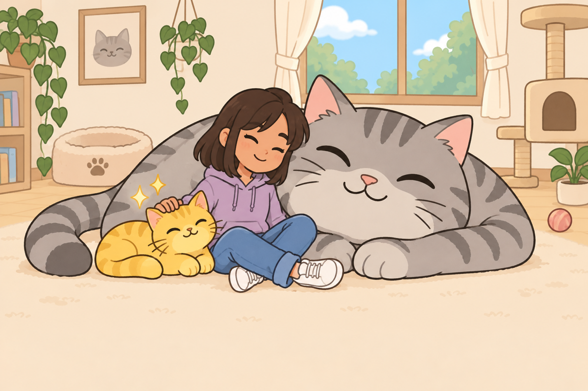
Lose cutscenes

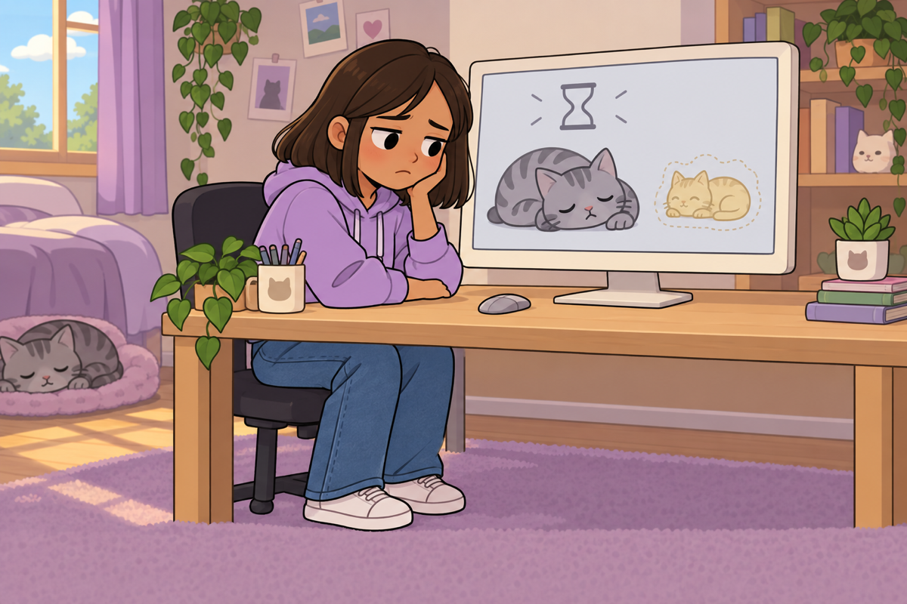

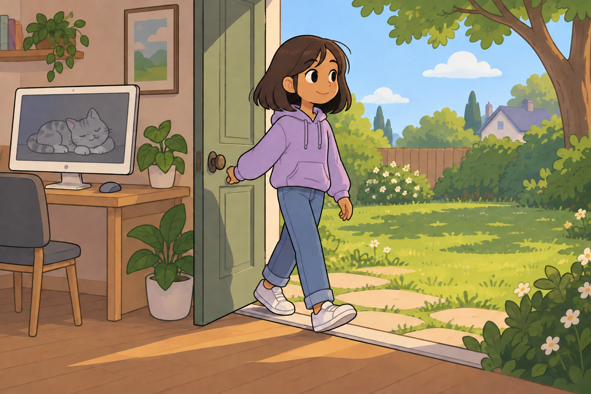

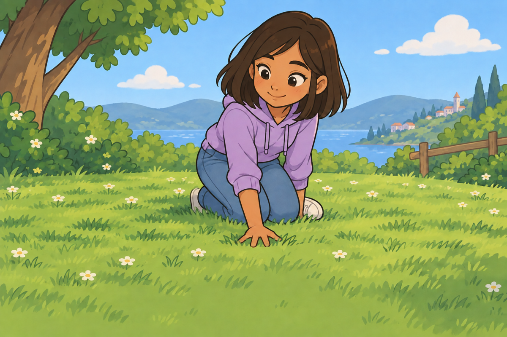